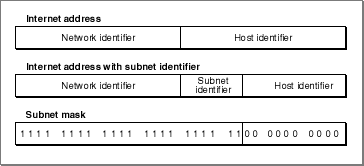

Legacy Document
Important: The information in this document is obsolete and should not be used for new development.
Important: The information in this document is obsolete and should not be used for new development.


About TCP/IP Services
The TCP/IP services provided by Open Transport include implementations of the TCP, UDP, RARP, BOOTP, DHCP, and IP protocols, an application interface to the domain name resolver (DNR), and utility functions you can use when creating and resolving Internet addresses. You can open TCP, UDP, and RawIP endpoints and DNR mappers using the interfaces described in the chapters "Endpoints" and "Mappers" in this book.A domain name resolver translates between the character-string names used by people to identify nodes on the Internet and the 32-bit Internet addresses used by the network itself. In that sense, its function is similar to AppleTalk's Name-Binding Protocol (NBP). Unlike AppleTalk, however, TCP/IP protocols do not specify a way for clients to register a name on the network. Instead, the network administrator must maintain a server that stores the character-string names and Internet addresses of the servers on the Internet, or each individual host must keep a file of such names and addresses. The Open Transport implementation of TCP/IP includes a DNS stub name resolver; that is, a software module that can use the services of the domain name system (DNS) to resolve a name to an address.
The nodes on a TCP/IP internet are known as hosts. A host that is addressable by other hosts has a host name and one or more domain names that identify the hierarchically arranged domains, or collections of hosts, to which it belongs. For example, the Open Transport team, part of the system software group at Apple Computer, might have a server with a fully qualified domain name of "otteam.ssw.apple.com". In this case, "otteam" represents the host belonging to the Open Transport team, "ssw" represents the domain of hosts belonging to the system software group (which includes the Open Transport team plus several other teams), and so forth. A fully qualified domain name corresponds to an Internet address, also known as an IP address, which is a 32-bit number that uniquely identifies a host on a TCP/IP network. An Internet address is commonly expressed in dotted-decimal notation (for example, "12.13.14.15") or hexadecimal notation (for example, "0x0c0d0e0f").
To use the application interface to Open Transport's DNR, you must first open a TCP/IP service provider. Once you have done so, you can
A mail exchange is any host that can accept mail for another host or for a domain. A mail exchange can be a mail server, a router, or just a host configured to accept and pass on mail. A mail preference value is used by a mail application to determine to which mail exchange to deliver a message when there is more than one that can accept mail for a particular domain. The mailer sends the mail to the mail exchange with the lowest preference value first and tries the others in turn until the mail is delivered or until the mailer deems the mail undeliverable.
- resolve a domain name to one or more associated Internet addresses
- look up the domain name associated with an Internet address
- retrieve the character strings stored by the domain name server that describe a host's processor and operating system
- retrieve DNS information associated with any query class and type
- obtain a list of mail exchanges and mail preference values for a host to which you wish to deliver mail
The subnet mask determines what portion of the IP address is dedicated to the host identifier and what portion identifies the subnet. A subnet is a portion of a network, which is in turn a portion of an Internet. Figure 11-2 illustrates the subnet portion of an address. The top portion of the figure shows an Internet address that does not include a subnet identifier. The center portion of the figure shows an Internet address that includes a subnet. Notice that the subnet identifier is formed by using a portion of the bits reserved for the host identifier. The bottom portion of the figure shows the subnet mask, which you can use to determine how many bits are used for the subnet and how many are used for the host.
Figure 11-2 Internet subnet address

The Open Transport TCP/IP services also include several utility functions. You can use these functions to
- Note
- As used in this chapter, a TCP/IP interface is the point of attachment of a host to a TCP/IP network. In the case of a multihomed host, the user can configure more than one TCP/IP interface. At present, the architecture of Open Transport TCP/IP supports multihoming, but it is not yet possible to configure a multihomed host. Therefore, all functions designed to return information about all the TCP/IP interfaces on a host return information about a single interface.

- get Internet addresses and subnet masks for all the TCP/IP interfaces on the local host
- fill in data structures used for Internet addresses
- convert an IP address string from dotted-decimal notation or hexadecimal notation to a 32-bit IP address
- convert a 32-bit IP address into a character string in dotted-decimal notation